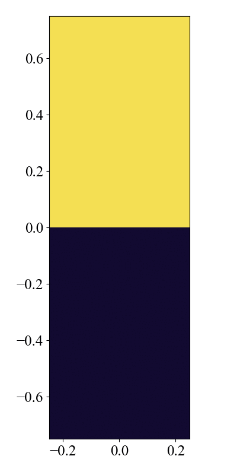

Rayleigh Taylor Instability
レイリー・テイラー不安定性問題。重力場において、密度の高い流体が密度の低い流体の上にあるときに発生する不安定性です。
Location
problems/rayleigh_taylor/
Geometry
\(-0.25 \leq x \leq 0.25\)
\(-0.5 \leq y \leq 0.5\).
Force
負の\(y\)方向に一定の重力を加えます。重力加速度は\(g=0.1\)に設定します。force.hppで以下のように設定します。
\[
\frac{\partial \rho v_y}{\partial t} = [...] - \rho g
\]
namespace force {
constexpr Real g_grav = 0.1; // gravitational acceleration
}
...
DEVICE inline Real y(MHDCoreType &qq, int i, int j, int k) {
#ifdef USE_CUDA
return -qq.ro[grid.idx(i, j, k)] * force::g_grav;
#else
return -qq.ro(i, j, k) * force::g_grav;
#endif
}
Initial Conditions
初期条件は、\(y=0.0\)で分離された上側と下側の状態で記述されます。上側領域（\(y \geq 0\)）では密度\(\rho = 2\)、下側領域（\(y < 0\)）では密度\(\rho =1\)です。圧力は\(p =p_0 - \rho g y\)とします。比熱比は\(\gamma = 1.4\)とします。
Boundary Conditions
\(x\)方向に周期境界条件を、\(y\)方向に対しては全ての物理量に対して対称境界条件を設定します。config.yamlでは以下のように設定します。
# config_x.yaml
boundary_condition:
# please use "standard" or "custom" for boundary_type
boundary_type: standard
periodic:
x: true
y: false
z: false
ro:
x: [symmetric, symmetric]
y: [symmetric, symmetric]
z: [symmetric, symmetric]
...
\(x\)方向の周期境界条件フラグをtrueに設定すると、対称境界条件が機能しなくなることに注意してください。
periodic:
x: true # when this flag is true, the symmetric boundary condition does not work
Results
用意されたpythonプログラムを実行することにより、結果のプロットは py/problems/figs/rayleigh_taylor/ に保存されます。
cd py/problems/
python rayleigh_taylor.py

3D Version
3次元に変更するのも設定ファイルを変更するだけで簡単にできます。
# config.yaml
grid:
i_size: 384
j_size: 1152
k_size: 384 # change from 1 to 384